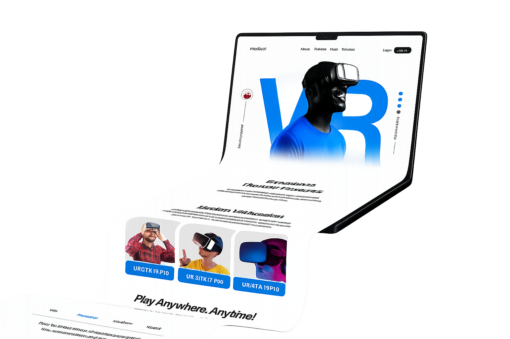

Produtora audiovisual
Vídeos para negócios e eventos.
Produzimos vídeos com direção para apresentar empresas, vender melhor, treinar equipes, registrar eventos e transformar ações em ativos de comunicação.
Clique para ouvir
Qual é o diferencial
Produzimos
Produções em destaque
Veja algumas produções Veic Vídeos.
O que a Veic produz
Vídeo é a entrega. A estratégia direciona a câmera.
Cada organização tem um momento e desafios diferentes.
Apresentação
Institucional, produtos, serviços e landing pages com vídeo.
Demanda
Anúncios, campanhas, reels, teasers e conteúdo educativo.
Confiança
Cases de sucesso, depoimentos, bastidores e autoridade.
Conversão
Vídeos comerciais, VSLs, demos e ofertas especiais.
Comunicação interna
Treinamentos, integração, processos e endomarketing.
Eventos
Registros, chamadas e ativos pós-evento.
Portfólio
Outros projetos de vídeos.
Mapa audiovisual
Em cada momento, um tipo de vídeo.
Alterne entre as etapas
Aparecer para quem ainda não conhece
Descoberta
Diagnóstico audiovisual
Qual vídeo faz sentido agora?
Clique na solução que você precisa
Produção com direção
Da intenção ao vídeo pronto.
Diagnóstico
Entendemos o momento atual do negócio, objetivos e desafios de comunicação.
Mapeamento
Identificamos oportunidades de vídeo na jornada do cliente e na comunicação interna.
Priorização
Definimos quais vídeos geram mais impacto para o momento atual.
Produção
Planejamos, dirigimos, gravamos e editamos vídeos alinhados ao objetivo.
Evolução
A comunicação evolui conforme o crescimento e as novas demandas.
Presença digital
Produzimos sites e páginas com vídeos.
Além da produção dos vídeos, a Veic Vídeos desenvolve sites e landing pages de apresentação para fortalecer presença digital, para ser encontrado no Google e apresentar produtos e serviços de forma mais profissional.

Antes de produzir
Perguntas frequentes.
Próximo take